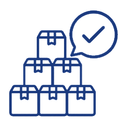

제작 문의
제작하려는 패키지 종류, 수량, 사이즈, 용도, 인쇄 여부를 확인합니다.
FLOW
상담형 제작 흐름에 맞춰 확인할 항목을 순서대로 정리했습니다.
제작하려는 패키지 종류, 수량, 사이즈, 용도, 인쇄 여부를 확인합니다.
제품 크기, 포장 방식, 재질, 구조, 파일 준비 상태를 상담으로 정리합니다.
확인된 사양을 기준으로 예상 견적과 제작 가능 여부를 안내드립니다.
로고, 인쇄 파일, 칼선, 색상, 후가공 여부를 제작 전 확인합니다.
필요 시 샘플 확인 후 본 제작으로 진행합니다.
제작 완료 후 검수와 포장, 납품 또는 배송 일정을 안내드립니다.
최종 견적과 납기는 사양 확인 후 안내됩니다.
CHECKLIST
모든 항목이 정해져 있지 않아도 괜찮습니다. 알고 있는 내용부터 알려주세요.
포장할 제품의 가로, 세로, 높이를 기준으로 확인합니다.

샘플, 소량, 본 제작 수량에 따라 안내 방식이 달라질 수 있습니다.
판매용, 선물용, 배송용, 행사 배포용 등 사용 목적을 정리합니다.
단상자, 싸바리박스, 쇼핑백, 봉투처럼 원하는 형태를 살펴봅니다.
무지 사용인지, 로고나 디자인 인쇄가 필요한지 확인합니다.
AI, PDF, 로고 파일 등 보유한 자료가 있으면 함께 확인합니다.
필요한 날짜가 있다면 가능한 범위와 제한사항을 먼저 확인합니다.
원하는 분위기나 기존 패키지가 있으면 제작 방향을 잡기 쉽습니다.
PACKAGE TYPE
패키지 종류에 따라 구조, 재질, 인쇄 확인 포인트가 달라집니다.
화장품, 굿즈, 소형 제품처럼 규격과 인쇄 위치가 중요한 품목에 적합합니다.
싸바리박스두께, 개폐 방식, 내부 구성품을 함께 봅니다.선물세트나 고급 패키지는 구조와 마감 방식 확인이 중요합니다.
쇼핑백손잡이 방식과 종이 두께를 먼저 정합니다.매장 포장, 행사 배포, 브랜드 쇼핑백은 수량과 인쇄 범위를 함께 확인합니다.
봉투내용물 크기와 여밈 방식을 확인합니다.서류, 카드, 제품 보호용 봉투는 사이즈 여유와 재질이 중요합니다.
스티커·라벨부착 위치와 표면 재질을 먼저 확인합니다.제품 라벨, 봉인 스티커, 로고 스티커는 사용 환경에 따라 사양이 달라집니다.
카페용품사용 제품과 매장 운영 방식을 함께 봅니다.컵홀더, 디저트 박스, 캐리어류는 실제 사용 상황을 기준으로 상담합니다.
디자인의뢰로고, 참고 이미지, 원하는 분위기를 정리합니다.도면 설계나 그래픽 디자인이 필요한 경우 자료 준비 상태부터 확인합니다.
SCHEDULE
제작 기간은 디자인 컨펌 이후 기준으로 안내됩니다. 수량, 재질, 인쇄, 후가공, 샘플 여부에 따라 필요한 기간이 달라질 수 있습니다.
COMMON QUESTIONS
제작 전에 자주 혼동하는 항목을 간단히 정리했습니다.
제품이 들어가는 여유 공간, 완충, 조립 방식까지 고려해 박스 사이즈를 정합니다.
모니터 색상과 종이 재질, 인쇄 방식에 따라 결과 색상이 달라질 수 있습니다.
칼선은 접고 자르는 기준이며, 디자인 파일은 인쇄될 그래픽을 담는 파일입니다.
수량이 적을수록 가능한 재질, 인쇄, 후가공 범위를 먼저 확인해야 합니다.
박, 형압, 코팅, 특수 가공은 준비와 확인 시간이 더 필요할 수 있습니다.
수량, 사이즈, 인쇄, 재질, 납품 조건을 확인한 뒤 최종 금액을 안내드립니다.
상담 안내